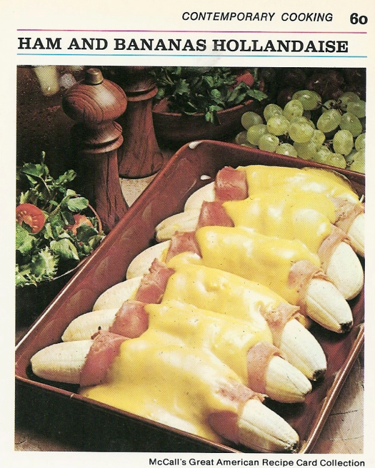

Ham and Bananas Hollandaise

Description
This is really self-explanatory.
Ingredients
- 6 medium bananas
- 1/4 cup lemon juice
- 6 thin slices boiled ham (approx. 1/2 lb)
- 3 tablespoons prepared mustard
- 2 envelopes hollandaise sauce mix
- 1/4 cup light cream
Steps
- Preheat oven to 400F. Lightly butter 2 quart shallow baking dish.
- Peel bananas; sprinkle each with 1/2 tablespoon lemon juice to prevent darkening.
- Spread ham slices with mustard. Wrap each banana in slice of ham. Arrange in single layer in baking dish. Bake 10 minutes.
- In small saucepan, combine sauce mix with 1 cup of water, 1 tablespoon lemon juice, and cream. Heat to boiling while stirring. Pour over bananas and bake 5 minutes longer.
- Enjoy. Pairs well with a gun in your mouth. Serves 6 people who now hate you.